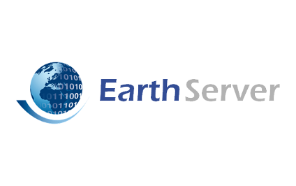

Earth Server

Visit the Project Website
The EarthServer project established Open Access and provided specialized Analytics on extremely large Earth Science Data, building upon and extending cutting-edge Array Database technologies.
EarthServer used typical database query languages and client/server interfaces to enable "mix & match" access to multi-dimensional, multi-source spatio-temporal data, without limitations related to physical size, briefly defined as "Big Earth Data Analytics". These are based on open standards such as OGC WCPS (known as "XQuery on raster data") and W3C XQuery. EarthServer combines both, achieving tight integration between data and metadata. Additionally, the Rasdaman Array Database System was extended with new spatio-temporal Coverage data types. On the server side, highly efficient optimizations, such as parallel and distributed query processing, ensured scalability up to Exabytes.
Six Lighthouse Applications, each with over 100 TB of data, demonstrated the feasibility of the approach. The experience gained was fed back into the standardization process to advance OGC specifications.
In Research and Technology Development activities, EarthServer created a new open-source client and server technology, proven to scale to Exabytes, based on distributed processing, supercomputing, and cloud virtualization. Implementations were based on the available rasdaman Big Data Analytics server. Swing:IT was a subcontractor within WP350 - Scalability and WP360 - Client.